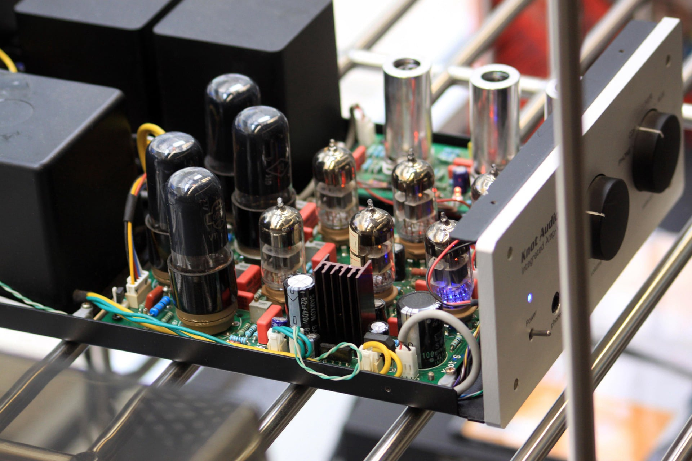

Who is Andrew Kurtz:
My Methodology
I believe the engineering mindset is not limited to technical problems, it’s a way of approaching everyday life. At its core, engineering combines math, science, logic, and creativity to solve problems. You start with an idea, test it, identify what works and what doesn’t, and then refine it until the result is effective and reliable. This process goes into everything I do, whether I’m designing a product or cooking a meal.
When I design something, I consider its form, function, and structure together. How does it look? What is it meant to do? How does it work? A good solution shouldn’t just function correctly, it should feel right to the person using it. By keeping the user’s needs, comfort, and experience in mind, I aim to create designs that are not only functional, but also intuitive and desirable.
My Interests
While I love just about anything physics and engineering related, my single greatest interest is Nuclear Physics. After working in industry for a few years, my goal is to get a PhD in Nuclear Physics. In my free time, I spend a lot of time learning about advances in physics, nuclear energy, and aeronautics.
Graduate Education: Stevens Institute of Technology
At Stevens Institute of Technology, I studied Electrical Engineering. My course load included classes related to communications, control theory, power grids, IoT/smart systems, and advanced mathematics. I graduated in December 2025 with a M.E. in Electrical Engineering. In addition, I completed the graduate certificate program in Power Systems Engineering.
Under-Graduate: Seton Hall
At Seton Hall, I studied physics and mathematics. My course load included classes related to physics, mathematics, electronics, physics/electronics labs, quantum mechanics, and many more. I graduated in May 2024 with a B.S. in Physics and a minor in Applied Mathematics.
Summer Internship: DSM-Firmenich
At DSM-Firmenich, I analyzed reactor and batch process data using Seeq and PI DataLink, identifying performance trends and supporting process optimization initiatives. Additionally, I collaborated with cross-functional engineering teams to troubleshoot production inefficiencies and improve batch reliability.
Experience as a Teaching Assistant: Seton Hall
During my time Seton Hall, I had several teaching opportunities. I conducted labs for Introductory Physics II, Electronics, and Advanced Laboratories. In this position, I guided students through physics and electronics experiments. Additionally, I designed and tested microwave and electronics labs under the guide of Dr. Erie Morales.
Contact Info:
Feel free to contact me or look me up at any of the places below.
Call/text: +1 (908) 235-1973
Email: andrew.kurtz616@gmail.com
LinkedIn: www.linkedin.com/in/andrew-kurtz-7a6b1230b
GitHub: https://github.com/AFKurtz
Bridgwater, NJ 08807